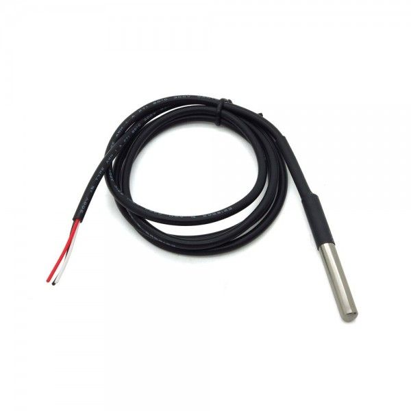
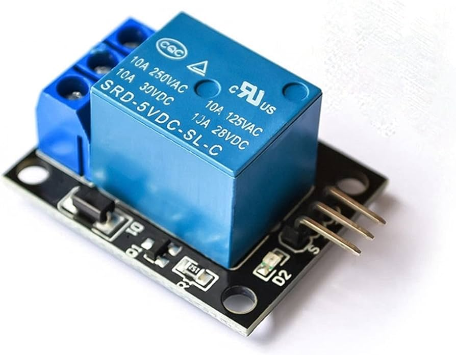
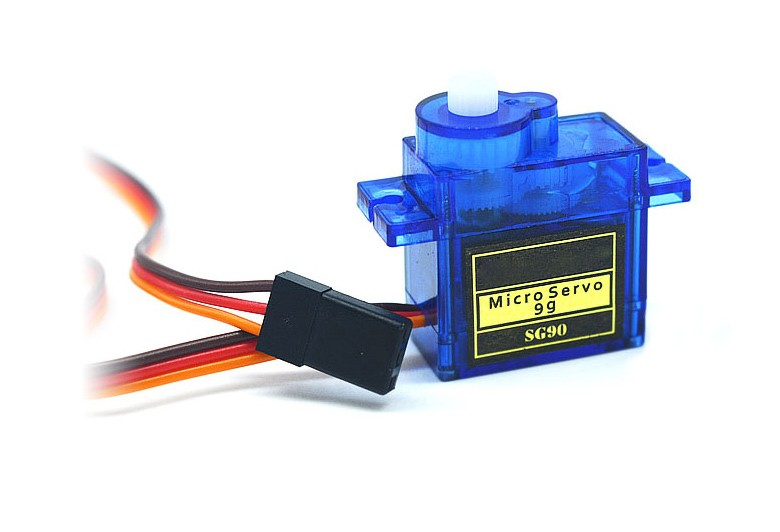

აღნიშნული მოწყობილობის ასაწყობად და ყველანაირი ფუნქციით გასაწერად გამოვიყენებთ არნიშნულ მიკროკონტროლერს, რომელსაც გააჩნია ჩაშენებული კამერისა და მეხსიერების ბარათის სლოტები, ასევე აქვს 40 შესაერთებელი(პინები), რომელთა უმრავლესობა, საჭროების შემთხვევაში, შესაძლებელია სხვადასხვა მიზნებისთვის იყოს გამოყენებული, შესაბამისად ეს ყველაფერი საშუალებას მოგვცემს სენსორებისაგან მივიღოთ ინფორმაცია და ამავდროულად სხვადასხვა კომპონენტებს სხვადასხვა ბრძანებები გავუგზავნო. აღნიშნული მოკროკონტროლერი თავსებადია Arduino IDE-სთან რომლის მეშვეობითაც მარტივად გავუწერთ სხვადასხვა ფუნქციებს.

DS18B20 Temperature Sensor
მოწყობილობის ერთ-ერთი ფუნქცია აკვარიუმში წყლის ტემპერატურის გაზომვა გახლავთ, სწორედ ამისათვის კი აღნიშნულ ტემპერატურის სენორს ვიყენებთ. პირველ რიგში აღნიშნული სენსორი არის წყალგამძლე რაც საკმაოდ გამოსადეგარია ჭკვიანი აკვარიუმის პროექტისათვის, ასევე აღნიშული სენსორი საკმაოდ აკურატულია და შეუძლია -55-იდან 125 ცელსიუსამდე გრადუსის გაზომვა 0.5 გრადუსის ცდომილებით. ჩვენს პროექტში გამოვიყენებთ 2 ცალ სენსორს, რომელებიც განთავსებულები იქნებიან აკვარიუმის ზედა და ქვედა მხარეებში, რაც საშუალებას მოგვცემს, რომ აკვარიუმის ზუსტი ტემპერატურია ვაკონტროლოთ. აღინიშნული სენსორი მოკროკონტროლერთან საკომუნიკაციოდ იყენებს ერთ სადენიან ავტობუსის პროტოკოლს (one wire bus protocol), ამ პროტოკოლისათვის კი გამოიყენება One Wire library by Paul და Dallas Temperature library ბიბლიოთეკები, რომლებიც Arduino IDE-ში ძალიან მარტივად ყენდება.

KY-019 Relay Module
აღნიშნული მოწყობილობა გამოყენებულ იქნება როგორც აკვარიუმის გამაცხელებლის, ასევე აკვარიუმის განათების სამართავად, მოცემული რელე მუშაობს როგორც 3 ვოლტზე ასევე 5 ვოლტზე, შესაბამისად მარტივად ინტეგრირებადია esp32-თან, ჩვენს პროექტში გომეყენებული იქნება 2 ცალი ასეთი რელე, რომელიც, ასე რომ ვთქვათ, შეასრულებენ ჩამრთველების ფუნქციას, რომელიც კონტროლირებადი იქნება მიკროკონტროლერიდან, აპლიკაციის საშუალებით. რელეზე, როგორც უკვე ავღნიშნე მიერთბული იქნება აკვარიუმის გამაცხელებელი, რომელიც ავტომატურად გაკონტროლდება აკვარიუმში არსებლი ტემპერატურის მიხედვით, ხოლო განათება კონტროლირებადი იქნება თავად მომხმარებლის მიერ აპლიკაციაში განთავსებული ღილაკით.

Servo Motor SG90
თევზებისათვს ავტომატური საკვების დისპენსერის ასაწყობად გამოვიყენებთ სერვო მოტორს კონკრეტულად sg90 მოდელს, აღნიშნულ მოდელს სამუშაოდ ესაჭიროება 3-იდან 7 ვოლტამდე ძაბვა შესაბამისად თავსებადია ჩვენს მიერ გამოყენებულ მიკროკონტროლერთან, ასევე აღნიშნული ძრავი მოძრაობს 180 გრადუსით რაც სავსებით საკმარისია, საკვების დისპენსერის გასარებად და დასაკეტად. აღნიშნული ტიპის ძრავები იმართება პულსით და შესაბამისად პულსის სისქისა და დაშორებების ცვლილებით შესაძლებელი გვაქვს, რომ ძრავი 180 გრადუსამდე სასურველი გრადუსით დავატრიალოთ. აღნიშული პულსები დაკონფიგურირება კი ხდება, რა თქმა უნდა, Arduino IDE-იდან სერვოსთვის გათვლილი სპეციალური ბიბლიოთეკის ServoESP-ის დამატებით.